Réaliser un audit technique qui vend la bonne solution.
Je pars d'un R1, je transcris, je fais chercher Codex avec Playwright MCP, je construis une recommandation déduite du call, puis je publie une page claire que le client peut ouvrir.
80sections guidées
26captures vidéo
3fichiers transcription
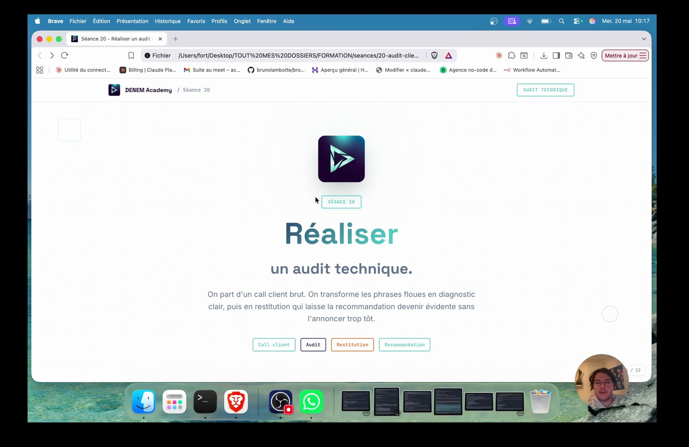
Le point de départ : transformer un call client en support d'audit actionnable.
Je pars d'un rendez-vous client réel dans l'esprit : un prospect a répondu, le R1 est passé, les problèmes sont visibles. Mon objectif n'est pas de faire joli. Je dois comprendre ce qu'il faut vendre et pourquoi cette solution correspond vraiment à sa demande.
À faire
Récupère la retranscription complète avant de demander une recommandation.
Preuve
Tu peux relire les phrases du client sans dépendre de ta mémoire.
Attention
Si tu commences par ton offre, tu risques de plaquer une solution qui ne correspond pas au call.
Je transforme un R1 en audit technique.
02Acte 1 · CadrerSéance 20
Deux stratégies existent : audit gratuit ou audit payant.
Je peux offrir l'audit pour ouvrir un R2, ou le vendre comme une mission à part entière. Les deux fonctionnent si l'audit est sérieux. La différence n'est pas technique : c'est une stratégie commerciale.
Avant
Pendant
Après
Un audit gratuit bâclé détruit la confiance. Un audit payant vague crée de la frustration.
Choisis ton intention avant de construire le document.
Tu sais si l'audit sert à vendre la suite ou s'il est déjà une prestation facturée.
03Acte 1 · CadrerSéance 20
La retranscription est la source de vérité.
Je ne demande pas à l'IA de deviner. Je lui donne le call brut. Les hésitations, les répétitions et les phrases mal structurées sont utiles : elles montrent ce qui fatigue vraiment le client.
À faire
Colle le call complet dans un fichier ou dans le prompt.
Preuve
Les problèmes extraits viennent des mots du client, pas de ton intuition.
Attention
Ne nettoie pas trop vite le call. Tu peux supprimer des signaux faibles importants.
04Acte 1 · CadrerSéance 20
Je garde la chronologie R1 → audit → R2.
Le R1 sert à comprendre. L'audit sert à rendre visible. Le R2 sert à décider. Si tu mélanges tout, tu vends trop tôt ou tu restes bloqué dans l'analyse.
1
Prépare
Note clairement à quelle étape tu es avec le client.
2
Contrôle
Tu sais quel livrable envoyer et quel prochain rendez-vous proposer.
3
Corrige
Ne transforme pas le R1 en démonstration technique interminable.
05
Tu ne vends pas 'de l'IA'. Tu vends moins d'oublis, plus de demandes traitées et moins de charge mentale.
05Acte 1 · CadrerSéance 20
Je ne vends pas l'IA, je vends un problème traité.
Action
Écris le problème client en langage métier.
Validation
La phrase tient sans utiliser le mot IA.
Prompt à copier
Je suis une agence d'automatisation IA.
À partir du call, trouve le produit qui correspond le mieux à sa demande.
Je veux une offre concrète, vendable, simple à comprendre, sans chatbot générique.
Contraintes :
- ne remplace pas l'équipe
- garde le contrôle humain
- priorise les demandes à forte valeur
- explique ce que je peux vendre maintenant
06Acte 1 · CadrerSéance 20
Le bon produit doit sortir du call.
Je demande à Codex de trouver l'offre qui colle à la demande. Dans la séance, la bonne direction devient une conciergerie IA légère pour demandes groupes et privatisations.
À faire
Demande une recommandation, puis challenge-la.
Preuve
La solution reprend les douleurs : dispersion, suivi, relance, réponses types.
Attention
Ne garde pas une recommandation qui ignore les objections du client.
07Acte 1 · CadrerSéance 20
Le besoin principal tient en une phrase.
Je cherche une phrase simple : ne plus perdre les demandes entrantes importantes, surtout les groupes, privatisations, anniversaires et repas d'entreprise. Cette phrase va guider tout le support.
Action
Écris une phrase de besoin principal avant les détails.
Validation
Tu peux expliquer l'audit en 20 secondes.
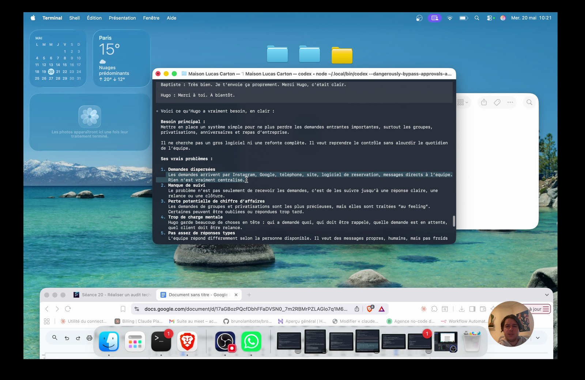
Le besoin principal tient en une phrase.
08Acte 1 · CadrerSéance 20
Je sépare les problèmes des symptômes.
Instagram, Google, téléphone, site et logiciel de réservation sont des canaux. Le vrai problème est le suivi : qui répond, qui relance, qui clôture, qui sait ce qui reste en attente.
Pourquoi
Instagram, Google, téléphone, site et logiciel de réservation sont des canaux. Le vrai problème est le suivi : qui répond, qui relance, qui clôture, qui sait ce qui reste en attente.
Action
Classe chaque phrase du call en canal, friction ou enjeu business.
Preuve
Tu identifies le problème racine sans confondre outil et cause.
Risque
Répondre à chaque canal séparément crée un système plus lourd.
09Acte 1 · CadrerSéance 20
Je garde les objections dès le départ.
Hugo veut quelque chose de simple, humain, maîtrisé. Ces contraintes ne sont pas des détails : elles déterminent la solution. Un système trop autonome ou trop froid serait hors sujet.
À faire
Liste les garde-fous avant de concevoir l'offre.
Preuve
La solution rassure l'équipe au lieu de lui imposer un outil.
Attention
Un automatisme sans validation humaine peut casser la confiance.
Si ça bloque
Un automatisme sans validation humaine peut casser la confiance.
Premier réflexe
Liste les garde-fous avant de concevoir l'offre.
Fin de l'étape
La solution rassure l'équipe au lieu de lui imposer un outil.
10Acte 1 · CadrerSéance 20
Mini-récap avant de lancer Codex.
Je dois avoir : le call, le client, l'objectif commercial, les contraintes humaines, les canaux et les demandes à forte valeur. À partir de là, Codex peut travailler avec un contexte stable.
À faire
Prépare un dossier client propre.
Preuve
Tu peux lancer le terminal sans chercher les fichiers.
Attention
Un dossier flou produit un audit flou.
11Acte 2 · PréparerSéance 20
J'ouvre le dossier client au bon endroit.
Je crée ou j'ouvre le dossier Maison Lucas Carton, puis je lance un terminal au dossier. Le but est simple : tous les fichiers d'audit restent au même endroit.
À faire
Ouvre le terminal directement depuis le dossier client.
Preuve
Les fichiers générés apparaissent dans le bon dossier.
Attention
Si tu lances Codex depuis le mauvais dossier, tu vas chercher les livrables partout.
12Acte 2 · PréparerSéance 20
Je lance Codex avec le contexte local.
Codex travaille mieux quand il voit le dossier, les fichiers et les captures. Je ne lui donne pas seulement une question : je lui donne un espace de travail.
Action
Lance Codex dans le dossier client, puis donne-lui la mission.
Validation
Codex peut créer le Markdown, le HTML et les assets localement.
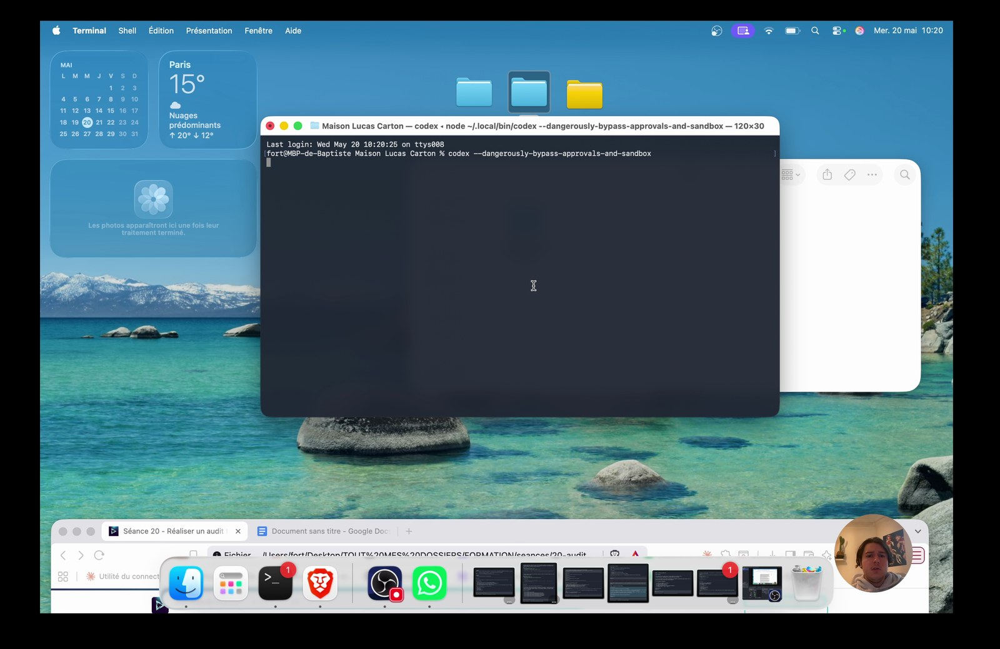
Je lance Codex avec le contexte local.
Prompt à copier
Je travaille sur un audit client.
Voici la retranscription du R1.
Analyse-la et dis-moi :
- ce qu'Hugo veut vraiment
- ses vrais problèmes
- ce qu'il faut proposer en premier
- ce qu'il ne faut pas proposer
- la phrase de synthèse à utiliser dans l'audit
[COLLE ICI LA RETRANSCRIPTION]
13Acte 2 · PréparerSéance 20
Premier prompt : extraire le vrai besoin.
Je commence par la retranscription. Je ne demande pas encore une page web. Je veux d'abord savoir ce que le client veut vraiment, ce qui bloque, et quel angle éviter.
À faire
Colle le call et demande une extraction orientée décision.
Preuve
Codex répond avec besoin principal, problèmes, priorité et phrase de synthèse.
Attention
Demander un livrable final trop tôt produit une jolie page sans diagnostic solide.
14Acte 2 · PréparerSéance 20
Je challenge la première réponse.
Une première analyse peut être correcte, mais trop générale. Je pousse Codex à se rapprocher du besoin réel : suivi des demandes, qualification, relance, contrôle humain.
01
FaireDemande ce qu'il faut proposer en premier, puis ce qu'il faut mettre de côté.
02
VérifierLa priorité devient les groupes, privatisations et événements privés.
03
ÉviterUn résumé qui dit juste 'améliorer la gestion client' ne suffit pas.
Consigne simple
Demande ce qu'il faut proposer en premier, puis ce qu'il faut mettre de côté.
La priorité devient les groupes, privatisations et événements privés.
15Acte 2 · PréparerSéance 20
Je repère les demandes qui valent cher.
Toutes les demandes ne se valent pas. Une question sur les horaires n'a pas le même poids qu'un repas d'entreprise, une privatisation ou une table de quinze personnes.
Signal
Lecture
Action
Call
Toutes les demandes ne se valent pas. Une question sur les horaires n'a pas le même poids qu'un repas d'entreprise, une privatisation ou une table de quinze personnes.
Classe les demandes par valeur potentielle.
Contrôle
Le support montre pourquoi certaines demandes doivent être suivies en priorité.
Automatiser les petites questions sans traiter les demandes importantes rate l'enjeu.
16
Je prépare les bonnes réponses. Je ne remplace pas l'équipe.
16Acte 2 · PréparerSéance 20
Je garde le ton humain dans le cahier des charges.
Action
Ajoute une règle : brouillons et suggestions, pas décisions sensibles automatiques.
Validation
La recommandation ne remplace pas le contact humain.
17Acte 2 · PréparerSéance 20
La priorité numéro 1 devient visible.
Dans la vidéo, le point fort ressort vite : demandes groupes, privatisations et événements privés. C'est là qu'il y a le plus de valeur et le plus de risque de perte.
À faire
Mets cette priorité dans le diagnostic, pas seulement dans tes notes.
Preuve
Le client comprend pourquoi l'audit ne part pas dans tous les sens.
Attention
Un audit trop large devient difficile à vendre.
18Acte 2 · PréparerSéance 20
Je formule les quatre axes d'audit.
Où arrivent les demandes ? Lesquelles ont le plus de valeur ? Comment les suivre sans alourdir l'équipe ? Que mettre en place en 30 jours ? Ces quatre questions structurent tout.
1
Prépare
Transforme l'analyse en axes, pas en liste de remarques.
2
Contrôle
Chaque slide peut se rattacher à un axe clair.
3
Corrige
Trop de catégories créent une restitution confuse.
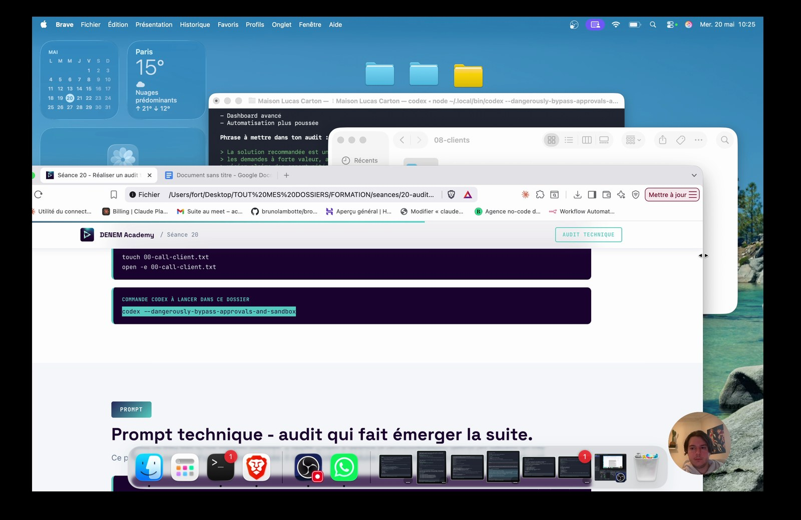
Je formule les quatre axes d'audit.
19Acte 2 · PréparerSéance 20
Je prépare la phrase de synthèse.
Maison Lucas Carton reçoit des demandes à fort potentiel, mais ne dispose pas d'un système simple et centralisé pour les qualifier, les suivre, les relancer et mesurer les opportunités perdues.
À faire
Écris cette phrase avant de créer la restitution.
Preuve
Elle peut devenir l'introduction du diagnostic.
Attention
Si la synthèse est molle, tout le document paraît moins solide.
Si ça bloque
Si la synthèse est molle, tout le document paraît moins solide.
Premier réflexe
Écris cette phrase avant de créer la restitution.
Fin de l'étape
Elle peut devenir l'introduction du diagnostic.
20Acte 2 · PréparerSéance 20
La première brique produit est posée.
Le produit n'est pas un chatbot complet. C'est un mini-CRM automatisé avec assistant IA de réponse pour les demandes entrantes importantes.
Action
Nommer la solution de manière métier : conciergerie IA légère.
Validation
Le produit correspond au call et à la priorité commerciale.
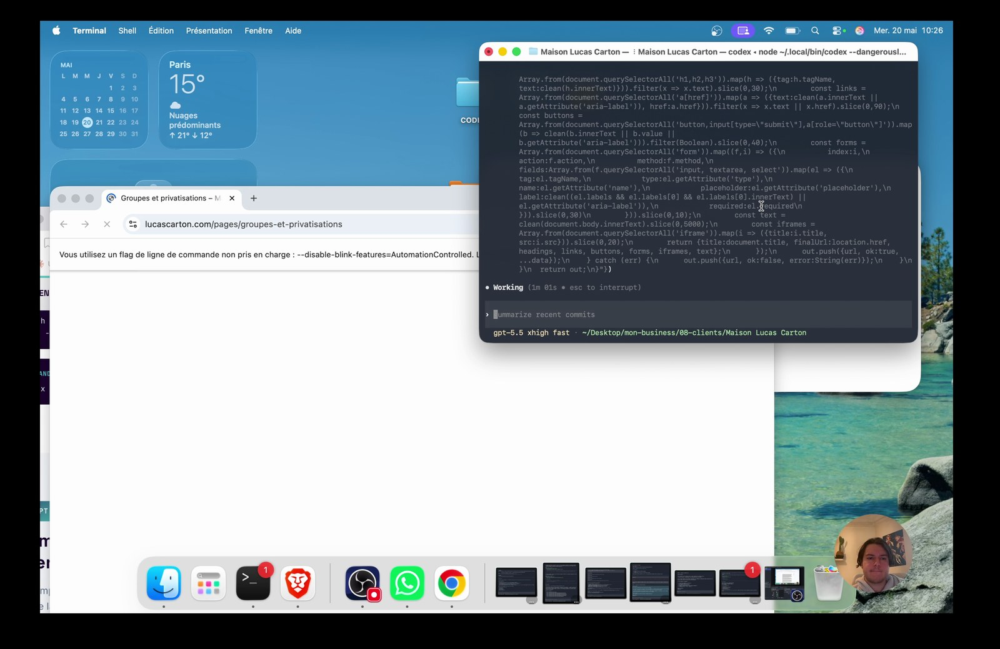
La première brique produit est posée.
21Acte 3 · DiagnostiquerSéance 20
Le système centralise les demandes.
Le premier module est un tableau simple : nouveau, à qualifier, répondu, à relancer, confirmé, perdu. Ce vocabulaire devient le langage commun de l'équipe.
Pourquoi
Le premier module est un tableau simple : nouveau, à qualifier, répondu, à relancer, confirmé, perdu. Ce vocabulaire devient le langage commun de l'équipe.
Action
Définis les statuts avant de parler d'automatisation.
Preuve
L'équipe sait où regarder et quoi faire ensuite.
Risque
Un tableau avec trop de statuts ne sera pas utilisé.
22Acte 3 · DiagnostiquerSéance 20
Le formulaire intelligent capte les bonnes infos.
Une demande de groupe doit récupérer date, heure, nombre de personnes, type d'événement, budget, contraintes alimentaires et besoin particulier.
Signal
Lecture
Action
Call
Une demande de groupe doit récupérer date, heure, nombre de personnes, type d'événement, budget, contraintes alimentaires et besoin particulier.
Liste les champs indispensables à qualifier.
Contrôle
L'équipe reçoit une demande exploitable sans relancer trois fois.
Un formulaire trop long décourage le client. Un formulaire trop court ne sert à rien.
23Acte 3 · DiagnostiquerSéance 20
Les réponses types doivent rester humaines.
Je crée des brouillons pour groupes, privatisations, anniversaires, avis Google et relances. L'équipe garde la main sur la validation.
01
FairePrépare des réponses propres, pas des réponses robotiques.
02
VérifierLe ton reste aligné avec le restaurant.
03
ÉviterUne réponse trop marketing abîme le positionnement premium.
Consigne simple
Prépare des réponses propres, pas des réponses robotiques.
Le ton reste aligné avec le restaurant.
24
Une demande à forte valeur ne doit jamais rester sans prochaine action.
24Acte 3 · DiagnostiquerSéance 20
La relance J+2 protège les opportunités.
Action
Ajoute une relance douce et visible dans le pipeline.
Validation
Les demandes importantes ont une suite au lieu de disparaître.
25Acte 3 · DiagnostiquerSéance 20
Le dashboard mesure ce qui était invisible.
Hugo dit qu'il sait qu'il perd des demandes, mais pas combien. Le dashboard sert à voir les demandes reçues, qualifiées, relancées, confirmées, perdues et leur source.
À faire
Crée des indicateurs simples avant les automatisations avancées.
Preuve
Le restaurant voit où les demandes se bloquent.
Attention
Mesurer trop de choses donne un tableau que personne ne regarde.
Si ça bloque
Mesurer trop de choses donne un tableau que personne ne regarde.
Premier réflexe
Crée des indicateurs simples avant les automatisations avancées.
Fin de l'étape
Le restaurant voit où les demandes se bloquent.
26Acte 3 · DiagnostiquerSéance 20
Je construis une offre en 30 jours.
Semaine 1 : audit rapide. Semaine 2 : tableau. Semaine 3 : automatisations. Semaine 4 : test avec l'équipe. La promesse est simple : installer sans alourdir le service.
1
Prépare
Découpe la livraison en semaines compréhensibles.
2
Contrôle
Le client voit comment passer du diagnostic à l'action.
3
Corrige
Un plan sans calendrier paraît abstrait.
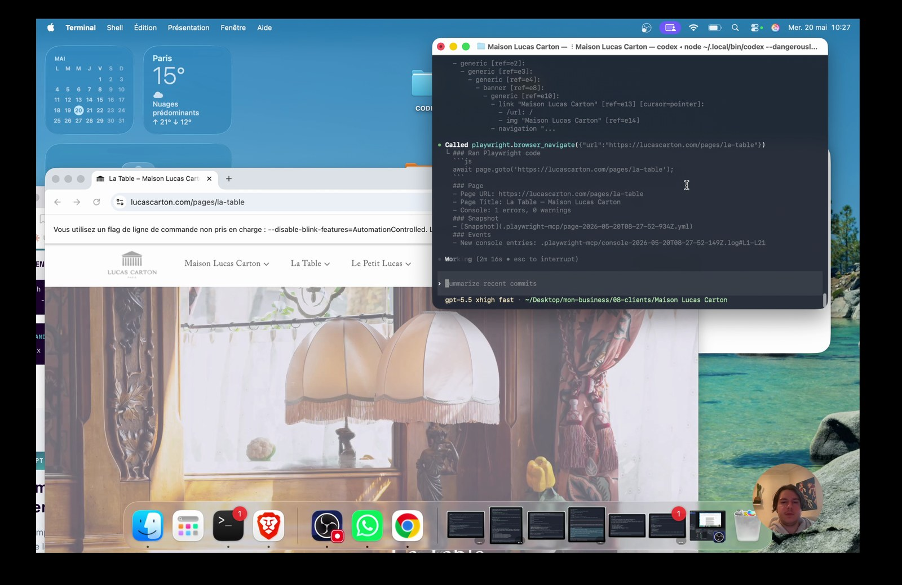
Je construis une offre en 30 jours.
27Acte 3 · DiagnostiquerSéance 20
Le prix doit être relié à la valeur.
Dans la séance, l'offre tourne autour de 8 500 euros. La logique n'est pas le TJM : c'est le temps économisé, les opportunités mieux suivies et la réduction de charge mentale.
Avant
Pendant
Après
N'invente pas de chiffre précis si tu ne peux pas le justifier.
Explique le prix avec des ordres de grandeur prudents.
Le client comprend que c'est un outil de protection de revenu, pas une dépense tech.
28
Je ne vends pas un miracle. Je protège ce qui fuit déjà.
28Acte 3 · DiagnostiquerSéance 20
Je ne promets pas un ROI magique.
Action
Utilise des exemples prudents et vérifiables.
Validation
La présentation reste crédible même face à un décideur exigeant.
29Acte 3 · DiagnostiquerSéance 20
Le produit final reste léger.
Le système recommandé : base de connaissance, qualification, brouillons, statuts, relances, alertes et dashboard. Rien de plus au départ.
À faire
Garde une première version adoptable par l'équipe.
Preuve
Le client peut dire oui sans imaginer une refonte complète.
Attention
Ajouter trop de modules rend l'offre plus difficile à acheter.
30Acte 3 · DiagnostiquerSéance 20
Le diagnostic donne envie de voir la preuve.
Une fois le produit clarifié, je ne peux pas rester dans le déclaratif. Je dois analyser le site, les parcours, les menus, la réservation, les pages groupes et les sources publiques.
À faire
Passe de l'écoute du call à la vérification terrain.
Preuve
Le support contient des preuves, pas seulement des affirmations.
Attention
Un audit sans recherche externe ressemble à un résumé de call.
31Acte 4 · ChercherSéance 20
Je lance l'analyse du site avec Playwright MCP.
Je demande à Codex de naviguer sur le site officiel. Il doit cliquer, lire, capturer et comprendre le parcours, pas juste chercher trois infos rapides.
À faire
Utilise le navigateur pour visiter les pages importantes.
Preuve
Tu récupères des captures, des textes, des URLs et des limites du parcours.
Attention
Une recherche Google seule ne suffit pas pour comprendre l'expérience client.
32Acte 4 · ChercherSéance 20
Je regarde le parcours groupes et privatisations.
C'est la page la plus proche du besoin. Je vérifie ce qu'elle dit, ce qu'elle demande, ce qui manque et comment le prospect passe à l'action.
Action
Inspecte la page groupes, le formulaire et les informations disponibles.
Validation
Tu sais si le site capte vraiment les demandes fortes.
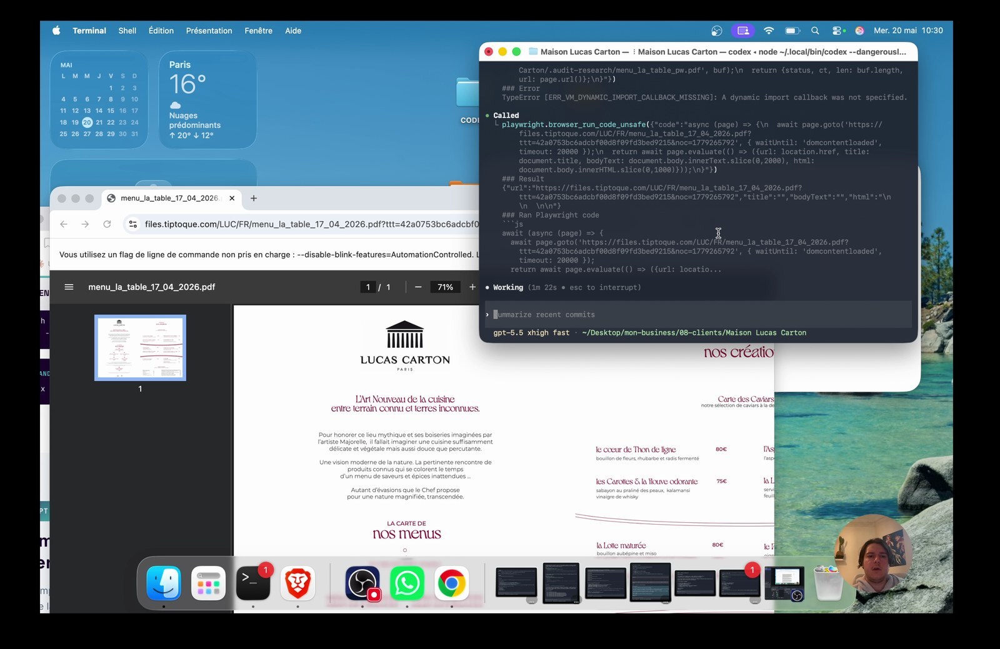
Je regarde le parcours groupes et privatisations.
33Acte 4 · ChercherSéance 20
Je vérifie l'accueil et les frictions visibles.
L'accueil, les cookies, le menu, les boutons et le parcours donnent déjà des signaux. L'objectif n'est pas de critiquer le site, mais de comprendre où le client décroche.
À faire
Note les éléments qui ralentissent ou masquent l'action importante.
Preuve
Tu peux expliquer ce qui existe déjà et ce qui doit être aidé.
Attention
Ne confonds pas esthétique et conversion.
34Acte 4 · ChercherSéance 20
Je collecte les sources externes.
Avis, Michelin, LinkedIn, menus, sources publiques : je veux comprendre le positionnement et ne pas parler comme un généraliste.
Pourquoi
Avis, Michelin, LinkedIn, menus, sources publiques : je veux comprendre le positionnement et ne pas parler comme un généraliste.
Action
Cherche les sources qui confirment le niveau, l'équipe et la réputation.
Preuve
Le document contient des preuves publiques et des limites claires.
Risque
Ne mélange pas fait vérifié et hypothèse.
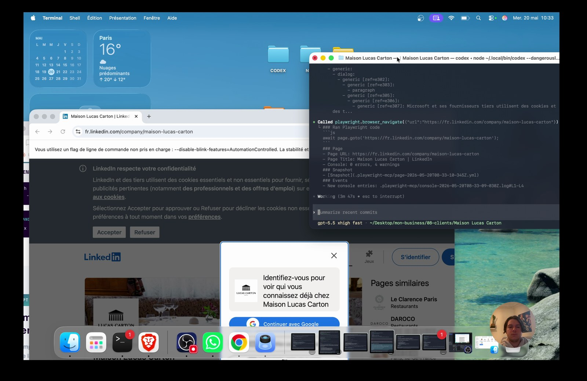
Je collecte les sources externes.
35Acte 4 · ChercherSéance 20
Je fais capturer les écrans utiles.
Les captures servent à montrer le parcours réel. Elles ne sont pas décoratives. Chaque image doit soutenir une étape : site, page groupes, formulaire, audit, schéma, publication.
À faire
Prends les captures au moment où elles expliquent quelque chose.
Preuve
Une capture peut remplacer une longue explication.
Attention
Trop d'images sans rôle rendent le support lourd.
Si ça bloque
Trop d'images sans rôle rendent le support lourd.
Premier réflexe
Prends les captures au moment où elles expliquent quelque chose.
Fin de l'étape
Une capture peut remplacer une longue explication.
Prompt à copier
Fais un fichier md avec toutes les informations récoltées.
Continue les recherches en MCP pour trouver son positionnement et d'autres informations utiles :
- nombre d'employés
- prix des plats et menus
- horaires d'ouverture
- réservation
- groupes et privatisations
- avis
- équipe
- sources publiques
Pousse ta réflexion.
Sépare faits vérifiés, hypothèses et recommandations.
36Acte 4 · ChercherSéance 20
Je demande un fichier Markdown de recherche.
Je ne veux pas perdre les informations collectées dans le terminal. Le fichier Markdown devient la base documentaire : faits, hypothèses, recommandations, sources et captures.
À faire
Demande un fichier MD complet avant de créer le HTML.
Preuve
Tu peux relire l'audit même si la session Codex est fermée.
Attention
Sans fichier intermédiaire, tu perds des détails importants.
37Acte 4 · ChercherSéance 20
Je sépare faits, hypothèses et recommandations.
Un audit crédible ne met pas tout au même niveau. Les horaires, menus ou pages vues sont des faits. La perte d'opportunités est une hypothèse forte si elle vient du call. La solution est une recommandation.
Signal
Lecture
Action
Call
Un audit crédible ne met pas tout au même niveau. Les horaires, menus ou pages vues sont des faits. La perte d'opportunités est une hypothèse forte si elle vient du call. La solution est une recommandation.
Tague chaque information dans le Markdown.
Contrôle
Le client peut distinguer ce qui est observé et ce qui est proposé.
Présenter une hypothèse comme un fait peut fragiliser toute la restitution.
38Acte 4 · ChercherSéance 20
Le fichier MD devient le cerveau de l'audit.
Une fois le Markdown prêt, tu peux le relire, l'enrichir, le donner à Cowork ou l'utiliser pour générer une présentation. C'est le vrai livrable interne.
Action
Ouvre le Markdown et vérifie qu'il contient les infos utiles.
Validation
Tu retrouves positionnement, prix, équipe, parcours, limites et recommandation.
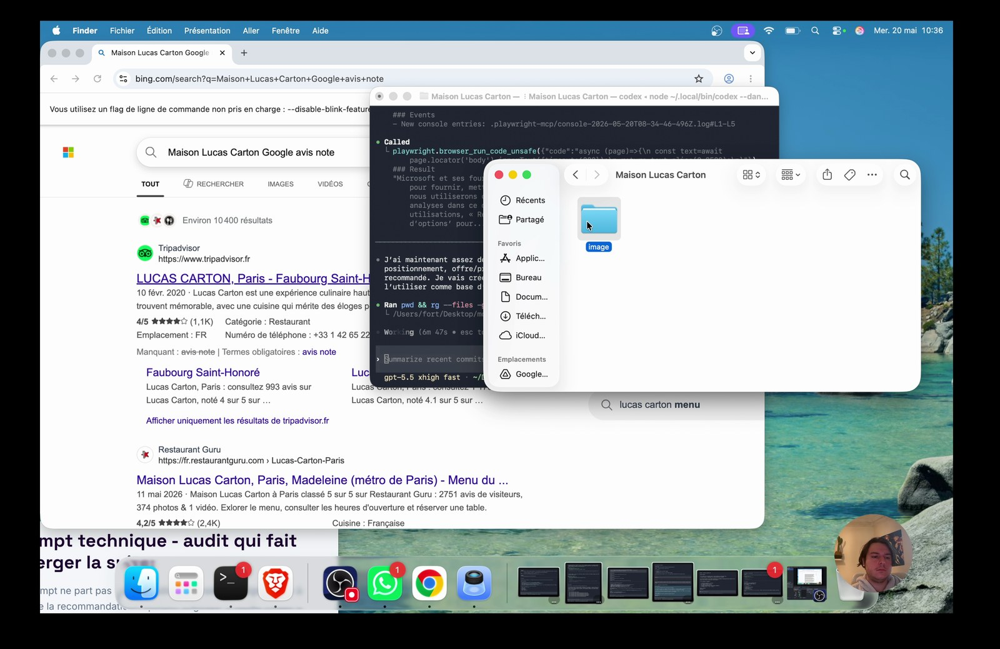
Le fichier MD devient le cerveau de l'audit.
39Acte 4 · ChercherSéance 20
Je vérifie aussi la version mobile.
Un parcours peut sembler correct sur desktop et devenir moins clair sur mobile. Pour un restaurant, beaucoup de demandes arrivent sur téléphone.
01
FaireDemande une capture ou une vérification mobile.
02
VérifierLe diagnostic ne rate pas le canal le plus probable.
03
ÉviterNe livre pas un audit web sans regarder mobile.
Consigne simple
Demande une capture ou une vérification mobile.
Le diagnostic ne rate pas le canal le plus probable.
40
Le site existe. Les pages existent. Le problème n'est pas la visibilité, c'est le suivi.
40Acte 4 · ChercherSéance 20
Je garde le prospect au centre.
Action
Formule le problème sans humilier le travail existant.
Validation
Le client se sent compris, pas attaqué.
41Acte 5 · BranderSéance 20
J'analyse le design du site.
Je regarde les couleurs, les typographies, la hiérarchie, les boutons, les bordures, les espacements et l'ambiance. Le client doit sentir que le support a été fait pour lui.
À faire
Inspecte le design avant de générer la restitution.
Preuve
La présentation reprend un langage visuel cohérent avec le restaurant.
Attention
Une restitution générique donne une impression de copier-coller.
42Acte 5 · BranderSéance 20
Je choisis une direction visuelle premium.
Pour Maison Lucas Carton, la logique est sobre : noir, blanc, doré, grands titres, beaucoup d'espace, schémas fins. Le support doit parler à un restaurant gastronomique.
Pourquoi
Pour Maison Lucas Carton, la logique est sobre : noir, blanc, doré, grands titres, beaucoup d'espace, schémas fins. Le support doit parler à un restaurant gastronomique.
Action
Adapte ton style au client sans perdre ta lisibilité.
Preuve
Le client reconnaît son univers dès les premières slides.
Risque
Un design trop startup peut sonner faux.
43Acte 5 · BranderSéance 20
Je ne publie pas un Google Doc brut.
Le Google Doc est pratique pour réfléchir. Mais pour envoyer au client, je veux un lien propre, lisible, premium, qui donne envie d'ouvrir et de réserver un R2.
Avant
Pendant
Après
Un document brut sous-vend ton travail.
Transforme la recherche en présentation web.
Le livrable peut être envoyé par email comme une page professionnelle.
Prompt à copier
Crée une présentation HTML premium pour restituer l'audit Maison Lucas Carton.
Objectif :
- diagnostic clair
- problème central visible
- solution déduite du call
- schémas simples
- offre 30 jours
- prix lisible
- lien envoyable par email
Contraintes :
- utilise uniquement les images locales
- respecte le branding du restaurant
- pas de promesse chiffrée inventée
- pas de jargon IA
- vérifie desktop et mobile
44Acte 5 · BranderSéance 20
Je demande une présentation HTML premium.
Je donne à Codex le Markdown, les captures et les contraintes. La page doit raconter l'audit : diagnostic, enjeux, solution, schémas, offre, ROI, prochaine étape.
À faire
Utilise un prompt de génération clair et orienté client.
Preuve
La page contient une narration, pas une collection de blocs.
Attention
Sans structure demandée, Codex peut produire une page jolie mais faible.
45Acte 5 · BranderSéance 20
Le diagnostic ouvre la page.
Je commence par une phrase forte : le problème n'est pas la visibilité, c'est le suivi. C'est court, compréhensible et directement relié au call.
Action
Pose le problème avant la solution.
Validation
Le client comprend pourquoi il doit lire la suite.
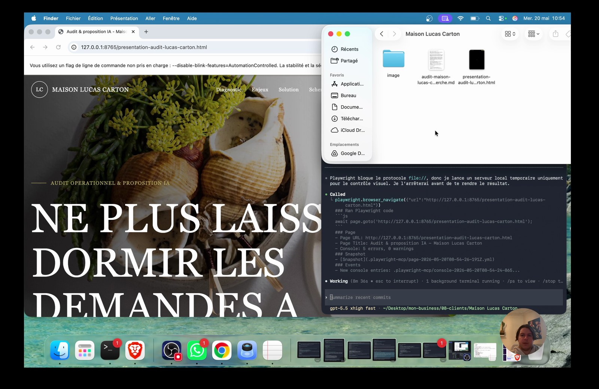
Le diagnostic ouvre la page.
46Acte 5 · BranderSéance 20
J'explique ce qui a été analysé.
La méthode rassure : call, site officiel, réservation, groupes, contact, menus, sources publiques. Le client voit que l'audit n'est pas seulement une impression.
À faire
Ajoute une slide méthode courte.
Preuve
Le périmètre de recherche est visible.
Attention
Ne surcharge pas avec des détails techniques inutiles.
47Acte 5 · BranderSéance 20
Je construis des schémas simples.
Les schémas rendent l'offre concrète : capture, qualification, mini-CRM, brouillon, alerte, relance. Le client comprend la mécanique sans lire un cahier technique.
À faire
Transforme le système en parcours visuel.
Preuve
Chaque module peut être expliqué avec une flèche.
Attention
Un schéma trop complexe fait perdre le côté léger.
Si ça bloque
Un schéma trop complexe fait perdre le côté léger.
Premier réflexe
Transforme le système en parcours visuel.
Fin de l'étape
Chaque module peut être expliqué avec une flèche.
48Acte 5 · BranderSéance 20
Je relie le prix à une logique de ROI.
La slide ROI ne doit pas promettre. Elle montre pourquoi les demandes de groupe doivent être protégées : une opportunité oubliée peut représenter une vraie valeur.
Action
Utilise des scénarios prudents et lisibles.
Validation
Le client voit pourquoi la demande groupe passe en priorité.
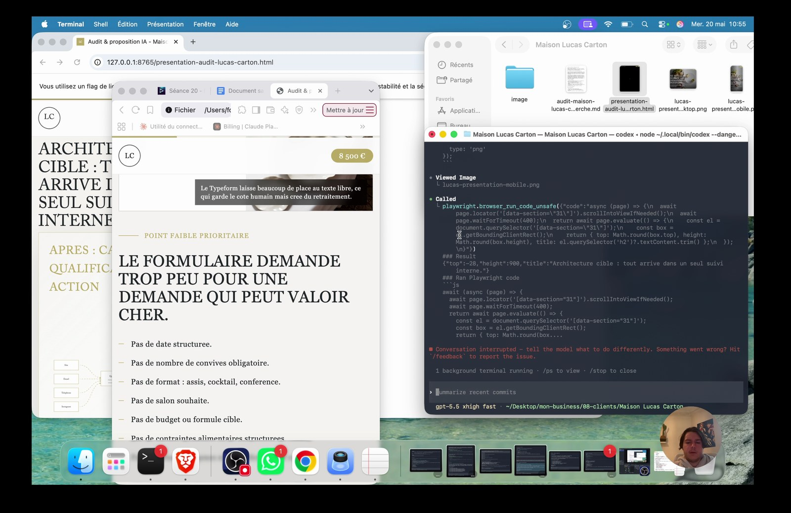
Je relie le prix à une logique de ROI.
49
Assez robuste pour suivre. Assez léger pour être adopté.
49Acte 5 · BranderSéance 20
Je garde une offre légère.
Action
Fais apparaître la simplicité comme un bénéfice.
Validation
Le client peut imaginer son équipe utiliser le système.
50Acte 5 · BranderSéance 20
Le support doit rester vendable.
La page n'est pas un rapport neutre. Elle doit amener une décision : regarder l'audit, comprendre le problème, accepter un R2, discuter de l'offre.
À faire
Écris chaque section avec une prochaine étape en tête.
Preuve
La page termine naturellement par une proposition de call.
Attention
Un audit sans conclusion commerciale est incomplet.
51Acte 6 · ConstruireSéance 20
Schéma 1 : capturer, qualifier, agir.
Les canaux d'entrée convergent vers une qualification. Ensuite seulement, la demande va dans le mini-CRM. Ce schéma rend visible la centralisation.
Action
Montre le flux avant de détailler les outils.
Validation
Le client comprend que les demandes ne se dispersent plus.
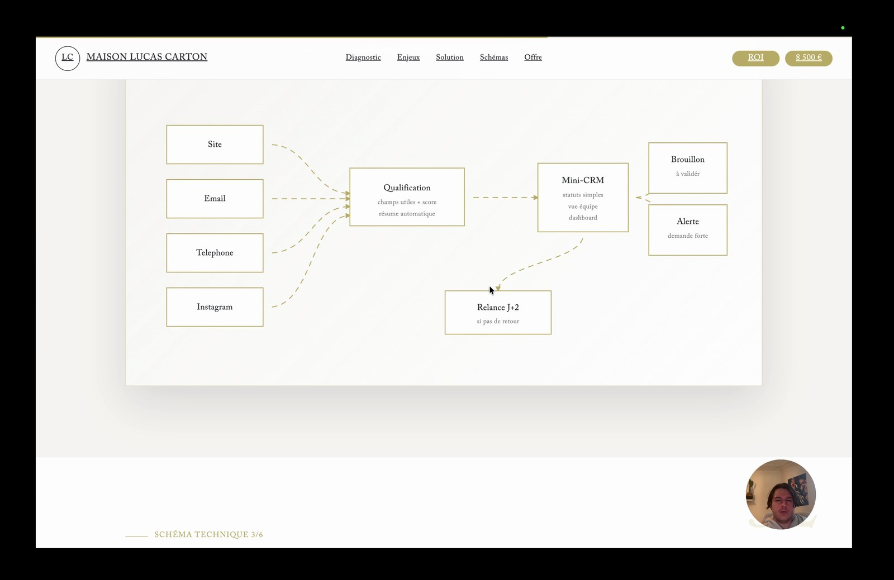
Schéma 1 : capturer, qualifier, agir.
52Acte 6 · ConstruireSéance 20
Schéma 2 : le statut devient le langage commun.
Nouveau, à qualifier, répondu, à relancer, confirmé, perdu, archive. Ce pipeline suffit à créer une discipline de suivi sans compliquer le service.
À faire
Fais du statut la base de l'équipe.
Preuve
Chaque demande a une prochaine action visible.
Attention
Un pipeline sans définition précise sera interprété différemment par chacun.
53Acte 6 · ConstruireSéance 20
Schéma 3 : les informations à structurer.
Contact, entreprise, événement, offre, suivi. Ces cinq familles d'information suffisent à qualifier une demande sérieuse.
Action
Structure les champs autour de la demande, pas autour de l'outil.
Validation
Le formulaire produit une fiche utile.
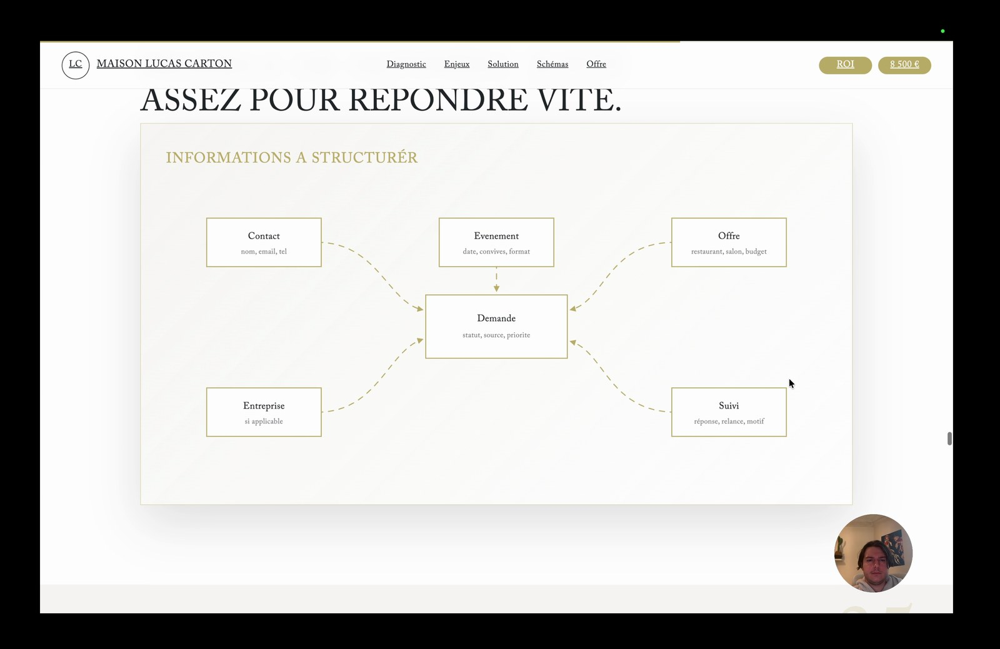
Schéma 3 : les informations à structurer.
54Acte 6 · ConstruireSéance 20
Je crée une slide avant/après.
Avant : demandes dispersées, notes internes, rappels oubliés. Après : capture, qualification, statut, relance, brouillon validable.
Avant
Pendant
Après
Un avant/après trop général ne convainc pas.
Montre le changement opérationnel, pas seulement la technologie.
Le client voit ce qui change dans son quotidien.
55Acte 6 · ConstruireSéance 20
Je garde les titres très courts.
Dans la vidéo, les titres débordent et je demande de les réduire. Sur une page premium, la typographie doit respirer, surtout sur mobile.
01
FaireContrôle les gros titres à toutes les tailles d'écran.
02
VérifierAucun titre ne sort de son bloc.
03
ÉviterUn beau design qui déborde paraît amateur.
Consigne simple
Contrôle les gros titres à toutes les tailles d'écran.
Aucun titre ne sort de son bloc.
Prompt à copier
Réduis encore la taille des titres principaux.
Vérifie que rien ne déborde sur mobile.
Corrige les accents, les fautes et les textes coupés.
Contrôle aussi les schémas : cadres, flèches, textes et alignements.
56Acte 6 · ConstruireSéance 20
Je corrige les accents et les textes coupés.
Les accents manquants, les cadres mal centrés et les mots coupés tuent la perception de qualité. Ce n'est pas un détail : c'est la livraison.
À faire
Relis tous les textes visibles après génération.
Preuve
Le client ne voit pas de faute évidente.
Attention
Ne délègue pas la relecture finale à l'IA sans contrôle.
57Acte 6 · ConstruireSéance 20
Je vérifie les schémas un par un.
Les schémas peuvent être beaux mais mal cadrés. Je contrôle flèches, cadres, alignements et lisibilité des textes.
À faire
Scrolle section par section, desktop puis mobile.
Preuve
Les schémas restent lisibles sans zoom.
Attention
Un seul schéma cassé peut faire douter de tout le support.
Si ça bloque
Un seul schéma cassé peut faire douter de tout le support.
Premier réflexe
Scrolle section par section, desktop puis mobile.
Fin de l'étape
Les schémas restent lisibles sans zoom.
58Acte 6 · ConstruireSéance 20
Je garde des sections variées.
Une restitution longue doit respirer. J'alterne gros titre, image, schéma, tableau, citation, offre, méthode, checklist et ROI.
Pourquoi
Une restitution longue doit respirer. J'alterne gros titre, image, schéma, tableau, citation, offre, méthode, checklist et ROI.
Action
Change de layout quand l'idée change.
Preuve
La lecture reste fluide jusqu'à la fin.
Risque
Répéter titre + paragraphe + image 40 fois fatigue le lecteur.
59
Je ne veux pas seulement un HTML. Je veux un lien qui donne envie d'ouvrir.
59Acte 6 · ConstruireSéance 20
Je transforme la page en lien envoyable.
Action
Prépare la publication dès que le rendu local est propre.
Validation
La page peut être ouverte depuis n'importe quel navigateur.
60Acte 6 · ConstruireSéance 20
Le master prompt encadre la recommandation.
Ce prompt sert de base complète pour transformer un call brut en audit, restitution, recommandation, plan 30 jours, email et script de closing.
Prompt à copier
# Prompt - Audit client et recommandation déduite du call
Tu es Codex. Tu es consultant senior en audit client, automatisation IA, restaurants, expérience client et vente consultative.
## MISSION
Tu dois transformer un call client brut en restitution commerciale.
Le client est Maison Lucas Carton, restaurant gastronomique parisien situé au 9 place de la Madeleine, 75008 Paris.
Site officiel : https://lucascarton.com
Pages utiles à analyser : accueil, La Table, Le Petit Lucas, chef Hugo Bourny, menus, expériences, réservation, salons privés, contact.
Le call est dans :
```txt
./00-call-client.txt
```
## OBJECTIF BUSINESS
La restitution doit faire émerger une recommandation opérationnelle claire.
Tu ne dois pas partir d'une solution imposée.
Tu dois déduire la prochaine étape à partir des phrases du client.
## RÈGLE ABSOLUE
Ne manipule pas le client.
Ne promets pas de résultats chiffrés inventés.
Ne dis pas que l'IA remplace l'équipe.
Ne force pas une solution qui n'est pas justifiée par le call.
Si le call montre des questions répétées, des appels manqués, des demandes groupes et un suivi dispersé, fais apparaître la solution adaptée naturellement dans la recommandation.
## TON
Simple, naturel, premium, rassurant.
Pas de jargon.
Pas de phrase startup.
Pas de promesse agressive.
Le client doit se dire :
> C'est exactement ce qu'il nous faut, et ça ne va pas compliquer le service.
## CE QUE TU DOIS EXTRAIRE
- phrases exactes ou idées fortes du client
- demandes à forte valeur
- questions répétées
- appels manqués
- canaux d'entrée
- risques d'oubli
- tâches manuelles
- objections contre l'automatisation
- besoin de contrôle humain
- priorité commerciale
- recommandation finale déduite du call
## SORTIE À CRÉER
Dans le dossier courant, crée :
- `01-audit-client.md`
- `02-restitution-client-premium.md`
- `03-recommandation-solution.md`
- `04-plan-action-30-jours.md`
- `05-email-suite-hugo.md`
- `06-script-call-closing.md`
- `scorecard-audit.csv`
- `README.md`
## STRUCTURE `01-audit-client.md`
1. résumé exécutif en 10 lignes
2. contexte du restaurant
3. problème central
4. signaux commerciaux importants
5. demandes à forte valeur
6. points de friction actuels
7. risques si rien ne change
8. objections et garde-fous
9. recommandation finale
## STRUCTURE `02-restitution-client-premium.md`
Écris une restitution lisible par Hugo.
Elle doit être courte, claire et premium.
Structure :
- ce que j'ai compris
- ce qui coûte du temps aujourd'hui
- ce qui peut être récupéré rapidement
- pourquoi les demandes entrantes doivent être mieux traitées
- pourquoi certains canaux doivent être aidés sans remplacer l'équipe
- pourquoi l'équipe garde le contrôle
- prochaine étape recommandée
## STRUCTURE `03-recommandation-solution.md`
Propose une recommandation intitulée :
```txt
Accueil client mieux traité, sans alourdir le service
```
La recommandation doit inclure uniquement les modules justifiés par le call :
- base de connaissance restaurant
- meilleure réponse aux questions fréquentes
- qualification demandes groupes et privatisations
- prise en charge légère des appels ou demandes simples si le call le justifie
- résumé transmis à l'équipe
- garde-fous humains
- phase test 30 jours
Ne parle pas de prix si aucun prix n'est demandé.
## STRUCTURE `04-plan-action-30-jours.md`
Semaine 1 :
- collecter horaires, menu, FAQ, groupes, privatisations, allergies, parking
- définir le ton humain du restaurant
- définir les limites de l'IA
Semaine 2 :
- construire la première brique de réponse côté site ou canal principal
- créer les parcours : question simple, groupe, privatisation, contact
- tester les réponses
Semaine 3 :
- ajouter une aide sur le canal secondaire le plus pertinent
- gérer les demandes simples et les cas où l'équipe n'est pas disponible
- transmettre résumé à l'équipe
Semaine 4 :
- mesurer demandes qualifiées
- corriger les réponses
- décider des améliorations
## EMAIL DE SUITE
Écris un email court à Hugo.
Objectif : lui donner envie de valider l'étape suivante.
Le mail doit dire que la priorité est de ne plus perdre les demandes intéressantes.
La conclusion doit proposer la prochaine étape recommandée, sans jargon et sans annoncer une technologie qui n'est pas justifiée par le call.
## SCRIPT CALL CLOSING
Écris un mini-script pour présenter la restitution à Hugo à l'oral.
Il doit être naturel, simple et orienté décision.
## CONTRÔLE QUALITÉ
Vérifie :
- pas de chiffres inventés
- pas de promesses agressives
- la recommandation est justifiée par le call
- l'équipe garde le contrôle
- le plan 30 jours est simple
- l'offre donne envie sans faire peur
## MESSAGE FINAL
Réponds seulement :
```txt
Audit client orienté recommandation créé.
Fichiers :
- 01-audit-client.md
- 02-restitution-client-premium.md
- 03-recommandation-solution.md
- 04-plan-action-30-jours.md
- 05-email-suite-hugo.md
- 06-script-call-closing.md
- scorecard-audit.csv
Recommandation : déduite du call client.
```
61Acte 7 · VérifierSéance 20
Je contrôle le rendu local.
Avant GitHub, j'ouvre la page en local. Je regarde les titres, les images, les boutons, les schémas et les textes qui pourraient dépasser.
À faire
Lance un serveur local et teste la page.
Preuve
La page s'affiche sans erreur et toutes les images chargent.
Attention
Ne publie pas une page que tu n'as pas ouverte.
62Acte 7 · VérifierSéance 20
Je corrige encore les titres si besoin.
Dans la séance, je réduis les titres plusieurs fois. C'est normal : les gros titres premium sont beaux, mais doivent rester lisibles sur mobile.
Action
Ajuste `clamp()` et les largeurs de blocs.
Validation
Le titre tient sur desktop et mobile sans masquer le contenu.
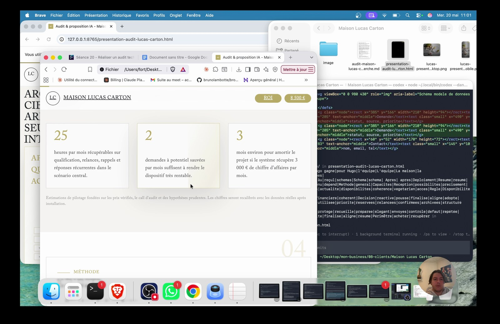
Je corrige encore les titres si besoin.
63Acte 7 · VérifierSéance 20
Je vérifie la page premium en situation réelle.
Je scrolle, je regarde l'expérience comme un client. Une page peut être correcte techniquement et faible commercialement. Les deux contrôles comptent.
À faire
Lis la page comme si Hugo la découvrait.
Preuve
La conclusion donne envie de réserver un échange.
Attention
Un support trop long sans rythme perd le client.
64Acte 7 · VérifierSéance 20
Je prépare le repo public dédié.
Si le repo principal est privé ou contient trop de fichiers, je crée un repo public dédié avec seulement les fichiers nécessaires à la page.
01
FaireNe pousse pas la vidéo, les tests ou les fichiers temporaires.
02
VérifierLe repo public contient uniquement ce qui sert au site.
03
ÉviterPublier un dossier complet peut exposer des fichiers inutiles.
Consigne simple
Ne pousse pas la vidéo, les tests ou les fichiers temporaires.
Le repo public contient uniquement ce qui sert au site.
Prompt à copier
Publie cette page sur GitHub Pages dans un repo public dédié.
Contraintes :
- ne pousse pas la vidéo
- ne pousse pas de fichier temporaire
- pousse uniquement index.html, logo, images et fichiers de transcription utiles
- active Pages sur main, path /
- attends le build
- vérifie que l'URL publique répond en HTTP 200
- donne-moi le lien final
65Acte 7 · VérifierSéance 20
Prompt de publication GitHub Pages.
Une fois la page locale prête, je peux demander la publication. La consigne doit être précise : repo public dédié, Pages activé, build vérifié, URL testée.
À faire
Utilise une consigne de publication complète.
Preuve
Tu obtiens une URL HTTP 200.
Attention
Pousser sans activer Pages ne donne pas un site.
66Acte 7 · VérifierSéance 20
Je pousse uniquement les fichiers utiles.
Le site a besoin de `index.html`, `logo-denem.jpeg`, `img/session-20/`, `transcription/` et éventuellement le prompt. La vidéo reste locale.
Pourquoi
Le site a besoin de `index.html`, `logo-denem.jpeg`, `img/session-20/`, `transcription/` et éventuellement le prompt. La vidéo reste locale.
Action
Fais un inventaire avant le commit.
Preuve
Le repo reste léger et public sans risque inutile.
Risque
Une vidéo de 2,5 Go n'a rien à faire dans GitHub Pages.
67Acte 7 · VérifierSéance 20
J'attends le build et je vérifie l'URL.
Un push ne suffit pas. Je dois attendre GitHub Pages, ouvrir l'URL publique et vérifier que le site répond.
À faire
Teste l'URL finale dans le navigateur.
Preuve
La page publique s'affiche comme la page locale.
Attention
Envoyer un lien avant build donne une mauvaise première impression.
68Acte 7 · VérifierSéance 20
Je contrôle le lien final.
Le client doit cliquer et voir directement la présentation. Pas de fichier à télécharger, pas de dossier à ouvrir, pas de bug d'image.
Action
Ouvre le lien public et scrolle les premières sections.
Validation
Le lien fonctionne hors du dossier local.
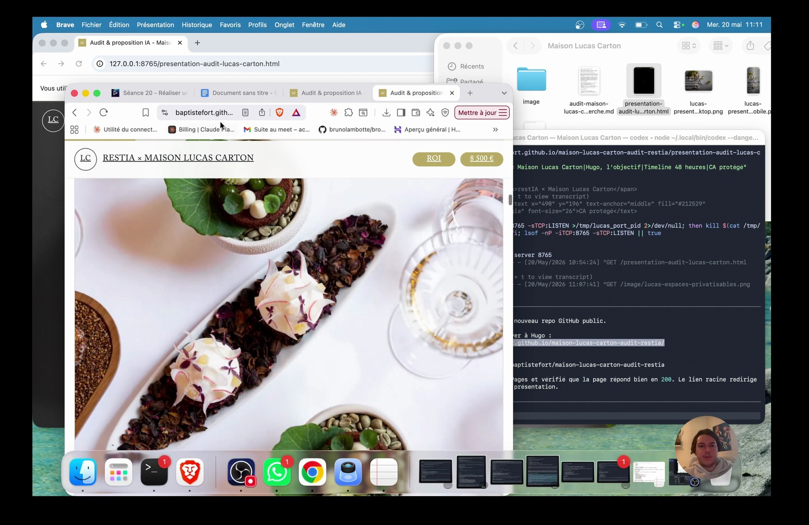
Je contrôle le lien final.
Prompt à copier
Fais-moi un email court pour Hugo.
Je lui envoie le lien de l'audit.
Ton :
- naturel
- simple
- humain
- pas de jargon
Objectif :
- lui montrer que j'ai compris le restaurant
- lui donner envie de regarder l'audit
- proposer un call R2 pour présenter la recommandation
69Acte 7 · VérifierSéance 20
Je prépare l'email de suite.
Une fois le lien prêt, je n'envoie pas juste 'voici le lien'. Je rappelle ce que j'ai analysé, je reste simple, et je propose un call pour présenter la recommandation.
À faire
Génère un email court et relis-le à la main.
Preuve
Le mail donne envie d'ouvrir la page et de répondre.
Attention
Un email trop long fait perdre l'élan.
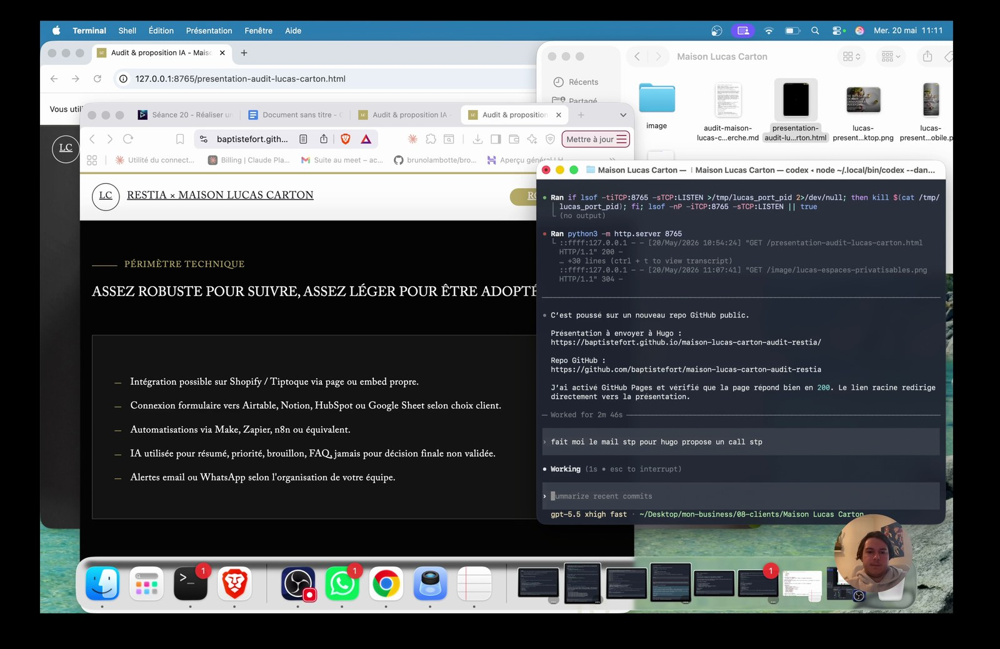
Je prépare l'email de suite.
70
Un audit envoyé n'est pas terminé. Il doit ouvrir un R2.
70Acte 7 · VérifierSéance 20
La relance fait partie du système.
Action
Prépare une séquence de relance simple.
Validation
Tu sais quoi faire après l'envoi du lien.
71Acte 8 · RéutiliserSéance 20
Méthode complète : du call au lien.
R1, transcription, extraction, recherche MCP, Markdown, design, HTML, vérification, publication, email, relance. Cette chaîne devient une méthode réutilisable pour tes futurs audits.
1
Prépare
Garde cette séquence comme checklist de production.
2
Contrôle
Tu peux refaire la séance sur un autre client.
3
Corrige
Sauter une étape fragilise la livraison.
72Acte 8 · RéutiliserSéance 20
Checklist de production rapide.
Le support doit être actionnable : prompts, captures, fichiers, liens, étapes et preuves. Si l'élève peut refaire la méthode sans toi, le support est réussi.
01
FaireCoche les livrables avant de considérer la séance terminée.
02
VérifierTXT, MD, JSON, HTML et images existent.
03
ÉviterUn support sans prompts copiables reste trop passif.
Consigne simple
Coche les livrables avant de considérer la séance terminée.
TXT, MD, JSON, HTML et images existent.
73Acte 8 · RéutiliserSéance 20
Erreurs fréquentes à éviter.
Vendre trop tôt, faire un audit généraliste, ignorer le branding, inventer des chiffres, publier sans vérifier, oublier l'email de suite.
À faire
Relis cette liste avant chaque audit.
Preuve
Tu corriges les risques avant qu'ils arrivent au client.
Attention
La vitesse ne doit pas remplacer le contrôle qualité.
Si ça bloque
La vitesse ne doit pas remplacer le contrôle qualité.
Premier réflexe
Relis cette liste avant chaque audit.
Fin de l'étape
Tu corriges les risques avant qu'ils arrivent au client.
74Acte 8 · RéutiliserSéance 20
Décider gratuit ou payant.
Audit gratuit : tu optimises la conversion vers l'offre. Audit payant : tu fais payer le diagnostic et tu engages le client. Dans les deux cas, le livrable doit créer de la valeur.
Avant
Pendant
Après
Un audit gratuit ne veut pas dire un audit faible.
Choisis selon ton niveau, ton marché et ton cycle de vente.
Tu sais expliquer pourquoi l'audit est gratuit ou facturé.
75Acte 8 · RéutiliserSéance 20
Adapter le produit à un autre secteur.
Restaurant, cabinet, agence, école, santé, immobilier : la méthode reste la même. Ce qui change, ce sont les demandes à forte valeur et les contraintes humaines.
Pourquoi
Restaurant, cabinet, agence, école, santé, immobilier : la méthode reste la même. Ce qui change, ce sont les demandes à forte valeur et les contraintes humaines.
Action
Remplace les champs métier, pas la logique.
Preuve
Tu peux créer un système réutilisable par secteur.
Risque
Copier l'offre Lucas Carton sur tous les clients serait une erreur.
76Acte 8 · RéutiliserSéance 20
Ce que l'élève doit refaire.
Choisis un prospect, récupère ou simule un R1, transcris, demande le besoin principal, analyse le site, crée le Markdown, puis génère une restitution HTML.
Signal
Lecture
Action
Call
Choisis un prospect, récupère ou simule un R1, transcris, demande le besoin principal, analyse le site, crée le Markdown, puis génère une restitution HTML.
Refais la chaîne complète sur un seul cas.
Contrôle
Tu as une page publiable et un email de suite.
Lire le support sans pratiquer ne crée pas la compétence.
77Acte 8 · RéutiliserSéance 20
Fichiers produits pour cette séance.
La séance produit une transcription brute, une transcription Markdown, un JSON de segments, un fichier de moments importants, les captures et la présentation HTML.
À faire
Ouvre les fichiers si tu veux repartir de la source.
Preuve
Les livrables sont traçables et réutilisables.
Attention
Ne mélange pas fichiers de formation et fichiers de publication.
78Acte 8 · RéutiliserSéance 20
Liens locaux utiles.
Ces fichiers restent dans le dossier de séance pour apprendre, vérifier et réutiliser la méthode. La vidéo n'est pas publiée.
À faire
Garde la transcription et le prompt sous la main.
Preuve
Tu peux reconstruire le support ou adapter le prompt.
Attention
Publier la vidéo lourde ou des fichiers temporaires serait inutile.
79
Je passe d'une conversation floue à un système vendable, vérifié et publiable.
79Acte 8 · RéutiliserSéance 20
La compétence à retenir.
Action
Raisonne toujours en système réutilisable.
Validation
Tu peux refaire la méthode sans repartir de zéro.
80
80Acte 8 · RéutiliserSéance 20
Fin de séance : je sais livrer un audit technique.
Tu as maintenant la chaîne complète : écoute, transcription, diagnostic, recherche, recommandation, design, publication et relance. C'est ce qui transforme une vidéo en compétence pratique.
À faire
Refais l'exercice sur ton prochain prospect.
Preuve
Tu as une page active, des prompts copiables et une méthode claire.
Attention
Ne garde pas cette séance comme inspiration. Utilise-la comme procédure.
Fin de séance : je sais livrer un audit technique.